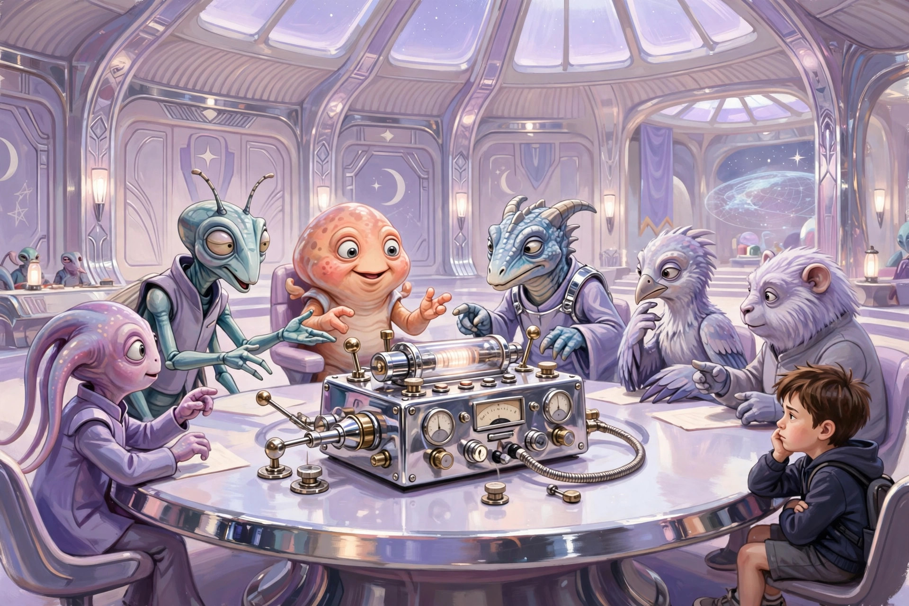

这家只出精品的动画电影公司也会翻车？
炎炎夏日的昨晚去看了皮克斯动画出品的新片《地球特派员》（中文版没用总动员当片名好评）。看完之后脑袋空空的，没啥回味。好像看了什么又好像啥也没看。
一言以蔽之，这是一部故事平庸（甚至俗套）、特效及格的动画影片。如果是普通电影公司出的，那也不必说啥，毕竟影片总体质量还是中上水平。但这可是动画界的扛把子皮克斯啊。你可能不熟悉这家公司的名字，但我列一些他家的代表作品，你很难一部都没看或者听说过：“总动员”系列（汽车总动员，海底总动员等等，评价最高的当然是机器人总动员），飞屋环游记，寻梦环游记，还有心灵奇旅等等。列出来的这些电影豆瓣评分普遍在8分甚至9分以上，有些已经位列影史经典。就是这样一家公司，新作却如此平庸（目前豆瓣6.9分），不能不让人大跌眼镜。
影片故事很简单，几句话就可以概括（怕剧透的同学请跳过）：小男孩Elio不幸在一次事故中失去双亲，被好心的姑姑收养。姑姑是位高级军官，负责清理太空垃圾。姑姑对elio很关心，也希望照顾好他。但elio很难与姑姑建立互相信任的亲子关系，总觉得姑姑不理解他。elio在一次偶然机会中了解到旅行者一号和金唱盘计划，对外星文明产生的强烈的兴趣。于是开始各种准备，希望被外星人关注甚至绑架。终于有一天他如愿以偿被一个外星人联合组织捕获，从此展开了一趟跌宕起伏的奇妙旅程。经过这段旅程，elio收获了友情和成长，最后回到地球，与姑妈和解，并建立了彼此的信任和宝贵的亲情。

故事就这么简单而俗套。说他俗套是因为影史上此类题材的影片太多太多，其中还不乏外星人ET这样的经典。珠玉在前，没点新意和过人之处，这种题材很难实现超越。但影片故事确实没有啥新意，更谈不上过人之处。属于那种看了开头就知道结果的剧情。所谓亲情冲突及和解的桥段，也无比俗套，毫无波澜。
唯一值得一夸的也就是动画效果了，但也只是达到了行业平均水平而已，没多少让人惊艳的地方。而且，关于外星文明的部分缺乏想象力。比如什么重力控制器自动翻译机之类的，感觉还在重复上世纪的科幻作品。外星人的思维和行事逻辑也和地球人高度一致，就像是换了皮肤化妆成外星人的地球人一样。你说这是便于观众理解也说的过去，但我觉得更像是编导偷懒或者干脆缺乏想象力罢了。
最后感慨一下，本片的平庸表明，曾经风靡全世界的行业标杆皮克斯动画现在也面临江郎才尽的尴尬局面。再放眼整个好莱坞，近年来少有精品出现，平庸之作乃至烂片层出不穷，不再重现昔日的辉煌（如神一般的九十年代和神一般的1995年）。这是否预示着电影的黄金时代已经过去了呢？